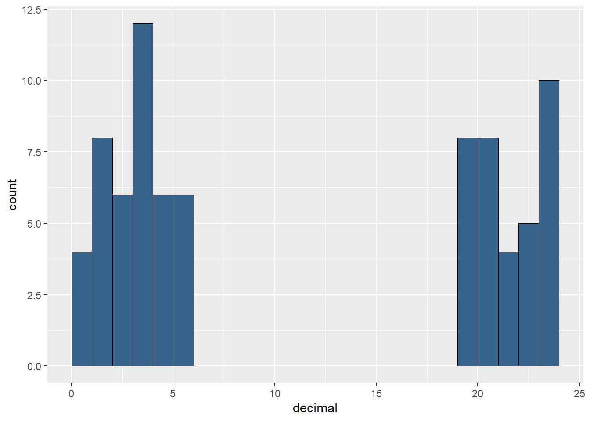
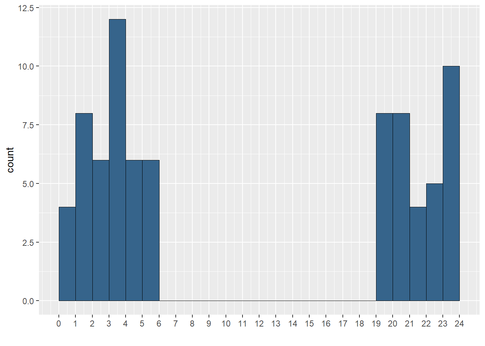
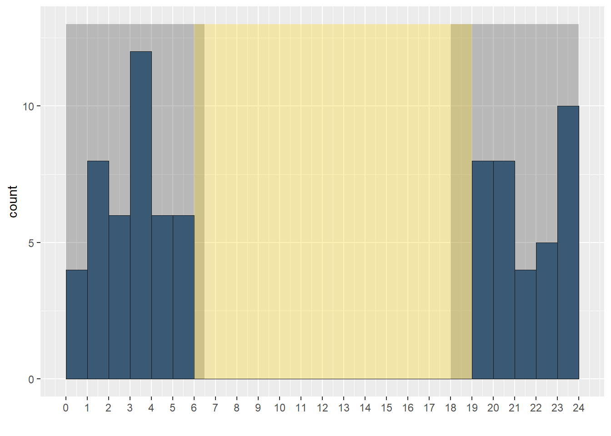
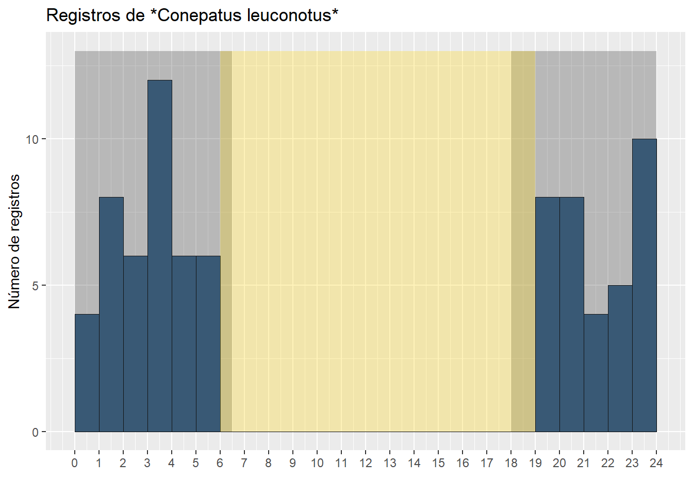
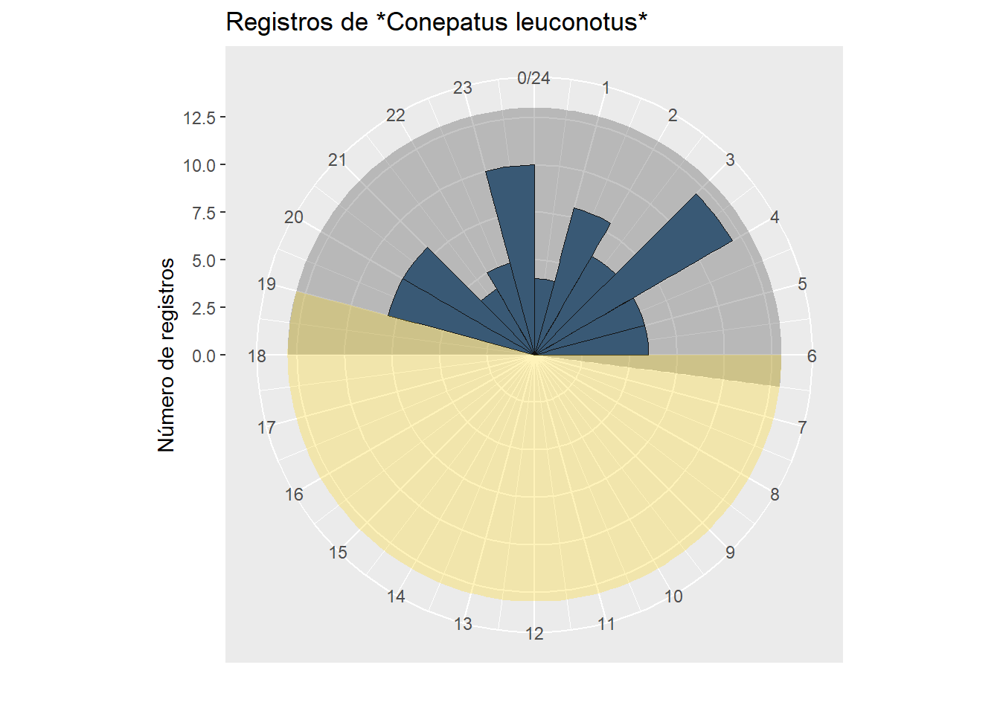
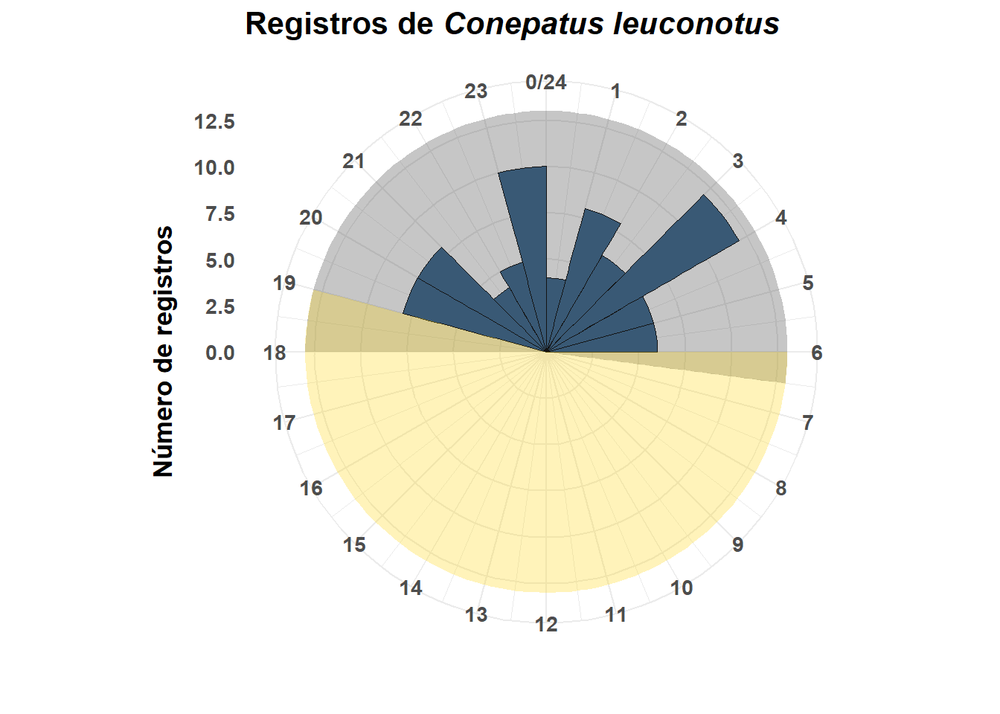
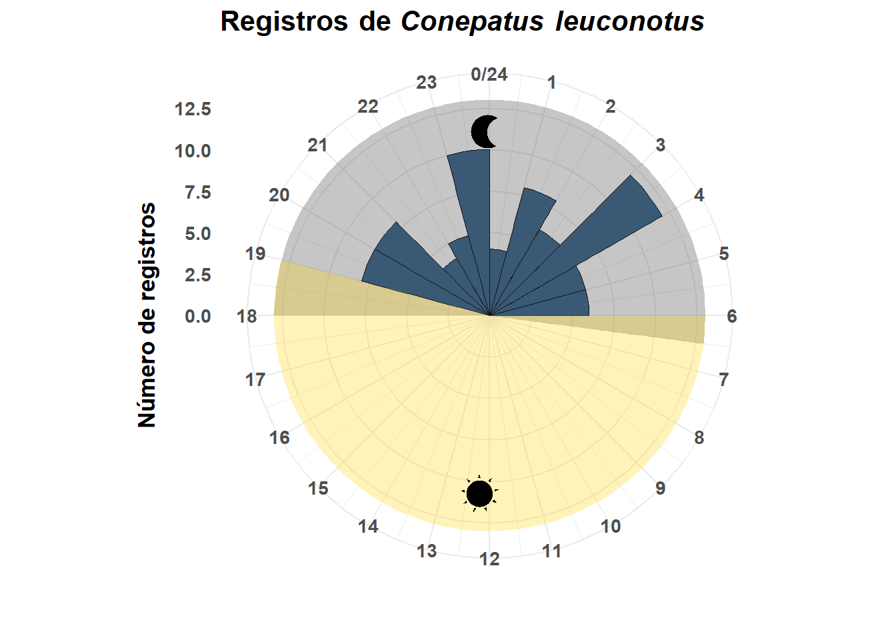
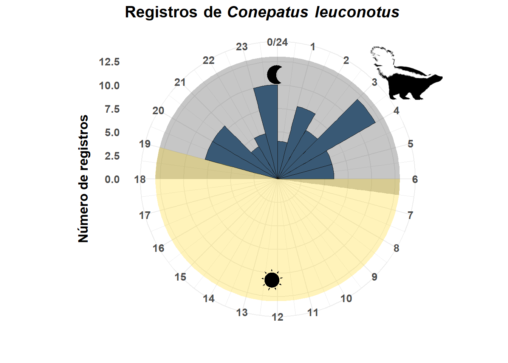

Hola a mundo. En está página vamos a ver un pequeño tutorial para hacer un gráfico de roseta y visualizar nuestros datos temporales de cámaras trampa (También aplica a otros métodos de muestreo).
Antes que nada les quiero decir que para hacer este gráfico me basé en el artículo de Nicolas Caruso Caruso, N. C., Vidal, E. L., Manfredi, M. C., Araujo, M. S., Lucherini, M., & Casanave, E. B. (2020). Spatio-temporal interactions of carnivore species in a coastal ecosystem in Argentina. Ocean & Coastal Management, 198, 105311. . El muy amablemente me envió su código cuando se lo pedí y yo simplemente lo edité a mis necesidades. Entonces vayan y síganlo a su Researchgate y denle mucho amor.
Estas son las librerías que necesitamos
library(tidyverse) # Easily Install and Load the 'Tidyverse'
library(ggtext) # Improved Text Rendering Support for 'ggplot2'
library(rphylopic) # Get 'Silhouettes' of 'Organisms' from 'Phylopic'
library(cowplot) # Streamlined Plot Theme and Plot Annotations for 'ggplot2'
library(png) # Read and write PNG imagesBásicamente trabajo con la tabla de registro de especies que genera el paquete CamtrapR, pero se puede usar cualquier base de dato mientras contenga las columnas de especies y de hora de registro de especies.
registers <- read_csv("Data/registros2.csv") # Cargamos las bases de datosVamos a crear una nueva columna donde convertirnos las horas a decimales, así no es obligatorio trabajar con el vector en tipo de tipo temporal.
# Debido a que read_csv si detecta que Time es una columna en formato tiempo, hay que convertirla a caracter para aplicar la función
registers$Time <- as.character(registers$Time)
# Esta función divide la columna de tiempo en horas, minutos y segundos y luego aplica la formula para transformar a horas decimales
registers$decimal <- sapply(strsplit(registers$Time,":"), function(x){
x <- as.numeric(x)
x[1]+x[2]/60+ x[3]/3600
}
)Filtramos la especie que nos interesa
zorrillo1 <- registers %>%
filter(Species== "Conepatus leuconotus") # En este caso una especie de zorrilloVamos a empezar a generar nuestro gráfico con ggplot
ggplot(zorrillo1, aes(x = decimal))+ # Definimos la base de datos y el x
geom_histogram(breaks = seq(0, 24), # en geometría le decimos que un histograma con cortes de 0 a 24
fill="steelblue4", # El color de las barras
colour = "black", # El color del borde
size=0.3) # El tamaño del borde
Ahora vamos a ajustar un poco la escala del eje x
ggplot(zorrillo1, aes(x = decimal))+
geom_histogram(breaks = seq(0, 24),
fill="steelblue4",
colour = "black", size=0.3)+
scale_x_continuous("", limits = c(0, 24), # Que se limite a 0 y 24
breaks = seq(0, 24), # Cortes de 0 a 24
labels = seq(0, 24)) # Que ponga cada hora
Lo siguiente es poner la sombras de “día” y “noche” en el gráfico gráfico. Aquí hay dos cosas importantes para definir
ggplot(zorrillo1, aes(x = decimal))+
geom_histogram(breaks = seq(0, 24),
fill="steelblue4",
colour = "black", size=0.3)+
scale_x_continuous("", limits = c(0, 24),
breaks = seq(0, 24),
labels = seq(0, 24))+
annotate("rect", # Sombra de la noche
xmin = c(18,0), xmax = c(24, 6.5),
ymin = 0, ymax = 13,
alpha=0.3, # Nivel de transparencia
fill="grey25")+
annotate("rect", #Sombra del día
xmin=6, xmax = 19, # Coordenadas en x
ymin = 0, ymax = 13, # Coordenadas en y
alpha=0.3, fill="#FFD819") # Color
Le agregamos un título y cambiamos el nombre del eje y
ggplot(zorrillo1, aes(x = decimal))+
geom_histogram(breaks = seq(0, 24),
fill="steelblue4",
colour = "black", size=0.3)+
scale_x_continuous("", limits = c(0, 24),
breaks = seq(0, 24),
labels = seq(0, 24))+
annotate("rect",
xmin = c(18,0), xmax = c(24, 6.5),
ymin = 0, ymax = 13,
alpha=0.3,
fill="grey25")+
annotate("rect",
xmin=6, xmax = 19,
ymin = 0, ymax = 13,
alpha=0.3, fill="#FFD819")+
labs(title="Registros de *Conepatus leuconotus*", # Título
y= "Número de registros") # Nombre eje y
Ahora viene la magia. Con la función coord_polar hacemos que nuestro gráfico sea circular desde 0 hasta 24
ggplot(zorrillo1, aes(x = decimal))+
geom_histogram(breaks = seq(0, 24),
fill="steelblue4",
colour = "black", size=0.3)+
scale_x_continuous("", limits = c(0, 24),
breaks = seq(0, 24),
labels = seq(0, 24))+
annotate("rect",
xmin = c(18,0), xmax = c(24, 6.5),
ymin = 0, ymax = 13,
alpha=0.3,
fill="grey25")+
annotate("rect",xmin=6, xmax = 19,
ymin = 0, ymax = 13,
alpha=0.3, fill="#FFD819")+
labs(title="Registros de *Conepatus leuconotus*",
y= "Número de registros")+
coord_polar(start = 0) # Hacer circular el gráfico
Finalmente ediciones adicionales
plot <- ggplot(zorrillo1, aes(x = decimal))+
geom_histogram(breaks = seq(0, 24),
fill="steelblue4",
colour = "black", size=0.3)+
scale_x_continuous("", limits = c(0, 24),
breaks = seq(0, 24),
labels = seq(0, 24))+
annotate("rect",
xmin = c(18,0), xmax = c(24, 6.5),
ymin = 0, ymax = 13,
alpha=0.3,
fill="grey25")+
annotate("rect",xmin=6, xmax = 19,
ymin = 0, ymax = 13,
alpha=0.3, fill="#FFD819")+
labs(title="Registros de *Conepatus leuconotus*",
y= "Número de registros")+
coord_polar(start = 0)+
theme_minimal()+ # Tipo de tema para quitar el gris de fondo
theme(text=element_text(size = 13, face = "bold"), # Tamaño y letra en negrilla
axis.title.x = element_text(margin = unit(c(2, 0, 0, 0), "mm")), # Margenes de x
axis.title.y = element_text(margin = unit(c(0, 3, 0, 0), "mm")), # Margenes de y
plot.title = element_markdown()) # Para hacer la especie en itálica
plot
Pues hay que descargarlos. En internet hay muchas páginas con iconos gratiutos, yo puedo recomendarles esta para la luna y esta para el sol. Nada más hay que descargar las imágenes en el directorio de trabajo y cargarlas.
# Leer cada png y guardarlo en un objeto
sun <- readPNG("sun.png")
moon <- readPNG("moon.png")Ya está. Ahora los agregamos al gráfico (puede tardar algunos minutos).
plot2<-ggdraw(plot)+
draw_image(sun,x=0.50, y=0.20, # Coordenadas en x y del sol
width=0.07, height=0.06)+ # Altura y ancho
draw_image(moon,x=0.50, y=0.76, # Coordenadas en x y de la luna
width=0.08, height=0.07, # Altura y ancho
scale = 0.75) # Como la imágen de la luna es algo más grande la escalamos para que iguale al sol
plot2
Dependiendo de donde quieras ubicar tu sol y tu luna, tendrás que jugar y cambiar las coordenadas en x y y de cada imagen. Así mismo sucede con el tamaño, el ancho y la altura.
Vamos a buscar una silueta de la especie que usamos en phylopic, mediate el paquete rphylopic
conepatus <- name_search(text = "Conepatus leuconotus", options = "namebankID")[[1]] # find names
conepatus ## uid namebankID
## 1 4f01913f-aaab-4095-bddc-8f5437e479da 2478295
## 2 1d59f3d9-9af3-4bdd-87d6-dd61176dc895 105624Como no tenemos una silueta de la especie, vamos a tomar la silueta que hay disponible para el género. Cualquiera puede hacer su silueta y subirla a phylopic, entonces animense.
conepatus_id <- name_images(uuid = conepatus$uid[1])$supertaxa[[1]] # get individual image id
conepatus_id## $uid
## [1] "04ef64e3-4759-4a44-bc6f-6df28f740f16"También puede conpiar y pegar el número de la imagen desde la página web de phylipic y guardarla en el objeto specie_id
conepatus_pic <- image_data(conepatus_id, size = 256)[[1]]Ahora agregamos nuestra silueta al gráfico:
plot2+ add_phylopic(conepatus_pic, # Silueta guardada
alpha = 1, # Ttransparencia
x = 0.8, y = 0.8, # Coordenadas
ysize = 0.15) # Tamaño
!!!!Listo¡¡¡¡
Dependiendo del tamaño de la imagen tienen que jugar con el argumento de size. También si quieren cambiar de ubicación hay que empezar a variar las coordenadas hasta llegar a donde la quieren ubicar.